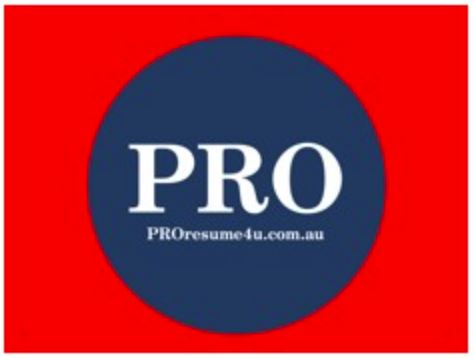
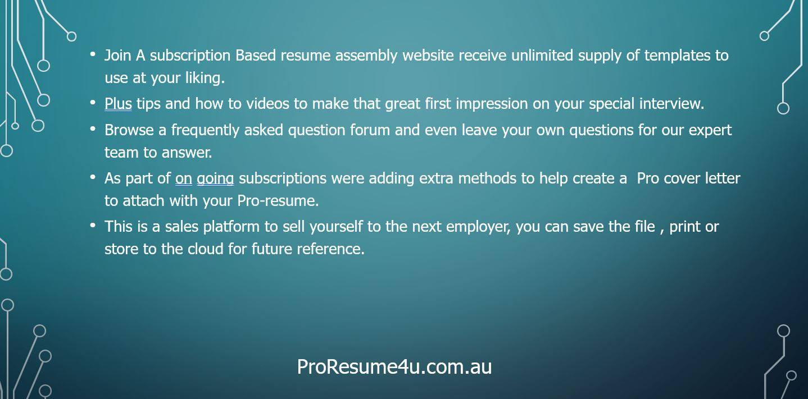
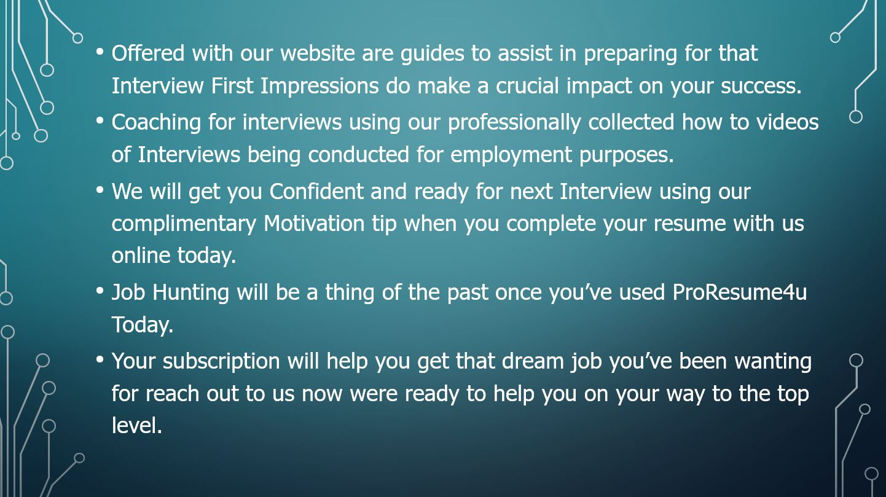
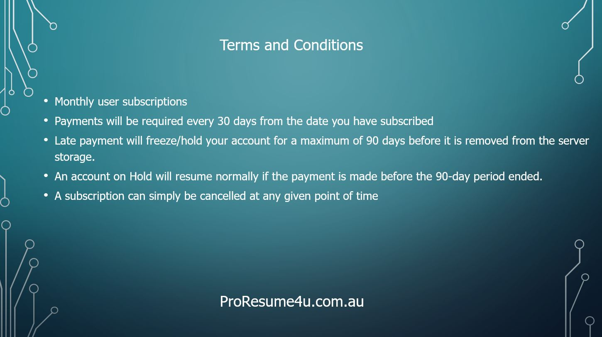
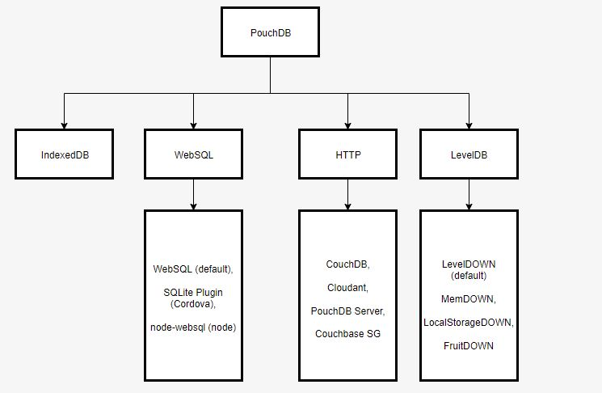
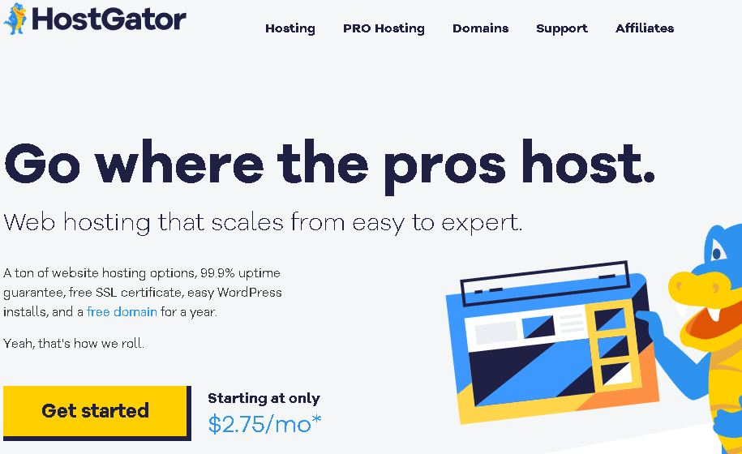
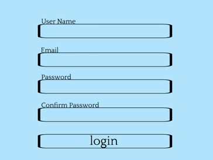
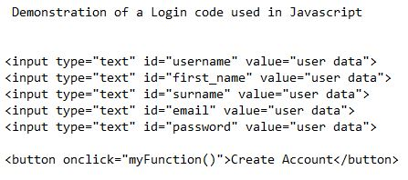
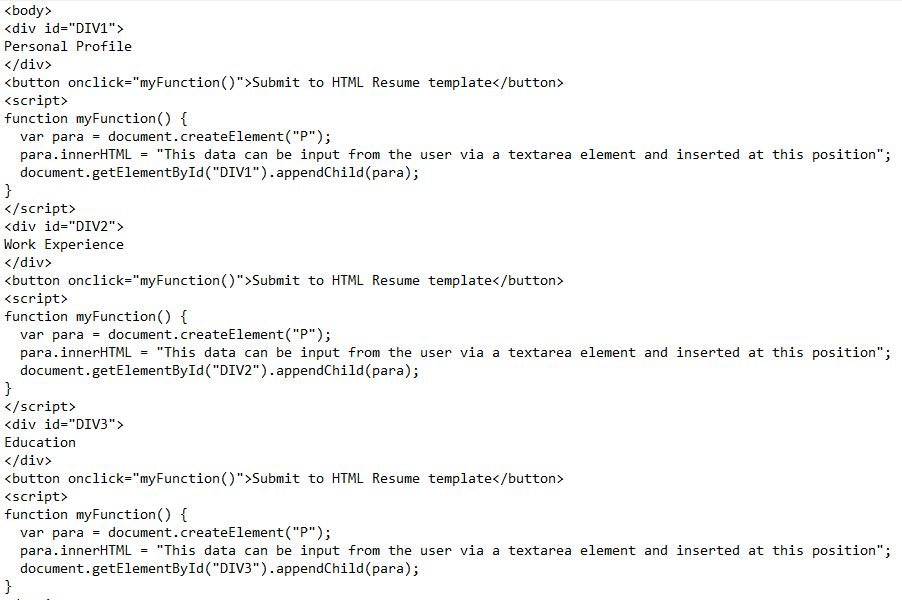
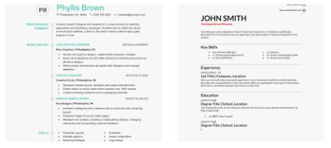

The team has decied over the 4 projects and have chosen Carl's project. To create a Top Resume Builder Website that anybody can use to create
a great professional grade product they can use
to apply for a new job or career title. I haven't found another site which has an AU domain in the top 10 links found
on google. Using Open source resources I plan to create and develop a “Professional Resume Builder website”.
We discussed all the Project Ideas as a group and have decided that the "Resume Builder Website" to be the best project to use as a team to setup.
Everyone has different skill sets which can be utilized to get the website created for Assessment 3. I believe its a great task to show case our skills
to our tutors, potential employers and investors in the future
Some items discussed during our meetings was a potential Name to call our resume builder website. The following ideas we have discussed "UltimateResume","PROresume4u",
"UltimateResumeBuilder".
Planning to advertise this website using some social media platforms such as Instagram, Facebook, LinkedInn and toward Local Recruitment agencies, Students and Universites.
A plan is in motion to Design and implement Website logo which can sit in the Favicon of a browser and an icon which can be used on 3rd Party websites as an entry into the
"Resume Login Portal" or an icon that can be seen and clicked with touchscreen devices.
Website Logo Design Drafts




Secondhand PC use is a resourceful way for our startup business to save money. Maintenance can be awfully expensive and involve getting new parts and having expensive servicing which can be unrealistic for a small business. Using secondhand PC’s and buying smaller cost-effective moving parts that wear out first such as fans and hdds that are available online means our business can run within budget restraints.
These kinds of secondhand resources can be found online on Facebook, Gumtree, Marketplace etc. This means that we can spend money on other areas of the business. And of course, it remains to be environmentally friendly.
The following are steps we will take for the initial setup of the "PROresume4u.com website":
- Registering the business name “PROresume4u”
- Applying for an ABN number and organising a business bank account at a local banking facility.
- Purchase of a Domain name. Occasionally a domain name is free for the first 12 months when a Online Hosting Service is subscribed too initially
- Hosting the Website on a “Homebased Webserver” using opensource Apache software on a windows-based computer.
- As some ISP providers may have clauses in the terms and conditions regarding running a webserver from home internet connection, I will consult with my NBN provider to check I am within these rules on their network prior to starting up the webserver software.
- An alternative solution to running a Home based webserver would to use an online hosting service wich has all the extra features you can utilise for a competitive price Hostgator.com
- Purchase of a dedicated PC to install the Apache webserver software on. This PC can be purchased as a used / second-hand unit to lower costs of start-up.
- Customers initially on first sign up would enter their "username","email address", "create a password" for their account creation and to access the premium featured website. we have chosen a JavaScript user interface for user inputs. JavaScript forms are clean, neat, and easy for the user to navigate. User capabilities are very important to create a professional product.
- On our resume builder website our method will use is JavaScript and a Html Input form with multiple Input fields using (textarea element field) to capture the users data under the following Headings "Profile summary","Work Experience",Education", "Skills"and "References" and store this data into a database position. By storing the data into the database the customers dont have to enter it all every time they want to edit their resume details.
- Using "pouchDB" as a database for Proresume4u domain name, PouchDB will work as a Client to an online CouchDB instance. Otherwise it will create a local
database using whatever backend is present. PouchDb is not a self contained database; it is a CouchDB-style abstraction layer over other database layers.
This can be visualized below :

PouchDB aims to provide a consistent API that "just works" across every browser and javascript environment, and in most cases the defaults are used. However, if your trying to reach a very large audience, or you want extreme performance, modification of the adapter settings will be required. - These objects would be used to fill in a Resume Template also chosen by the user as their desired format and can then be converted to a .doc word document file for download or email purposes.
- We have identified the script google translate uses to translate our website into any Language the user requests for.
- I want to include options for the user to be able to save their PROresume file to the cloud storage such as DropBox, Google Drive and OneDrive so their able to access it remotely or link to it and any available share options




